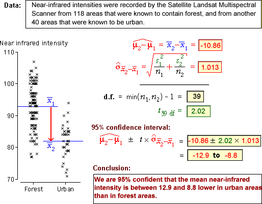

| Prob ( | is within ± 1.96 | of μ2 - μ1) = 0.95 |
Interval estimate
A point estimate of µ2 − µ1 cannot be easily interpreted on its own. The estimated error distribution that was shown on the previous page helps, but statisticians commonly use an interval estimate instead — a range of values within which we are confident that the true value of µ2 − µ1 will lie.
If population standard deviations were known...
From the normal distribution of the error, we can state that
| Prob ( | is within ± 1.96 | of μ2 - μ1) = 0.95 |
If we knew the values of the two parameters σ1 and σ2, we could therefore obtain a 95% confidence interval for µ2 − µ1 as
| ± 1.96 |
Confidence interval for difference
Unfortunately, neither σ1 nor σ2 are known in most practical applications, so we must replace them by their sample equivalents in the confidence interval. As a result, the constant '1.96' must also be replaced by a slightly larger value from t-tables,

where the degrees of freedom for the t-value are
ν = min (n1−1, n2−1)
(Interval estimates obtained in this way actually have a confidence level that is slightly higher than 95% — they are conservative estimates. Some authors prefer a different formula for the degrees of freedom that gives a slightly lower t-value, but the difference is usually negligible.)

Examples
The diagram below shows how a confidence interval is obtained and interpreted for the difference between the means of two groups. Use the pop-up menu to see other data sets.

Properties
Confidence intervals for the difference between two group means have the same properties as the confidence intervals that we investigated in earlier sections. A confidence interval that is obtained using the above formula varies from sample to sample and:
The confidence interval will include the true difference, µ2 − µ1, in approximately 95% of such repeat samples.
Demonstration of properties
The simulation below shows that 95% confidence intervals vary from sample to sample, and that not all of them include the true difference between the population means.
Group B has a population mean that is 10 greater than the mean of group A. Click Accumulate then take 100 or more samples from the two populations.
Observe that approximately 95% of the resulting confidence intervals for µ2 − µ1 include the true value (10).